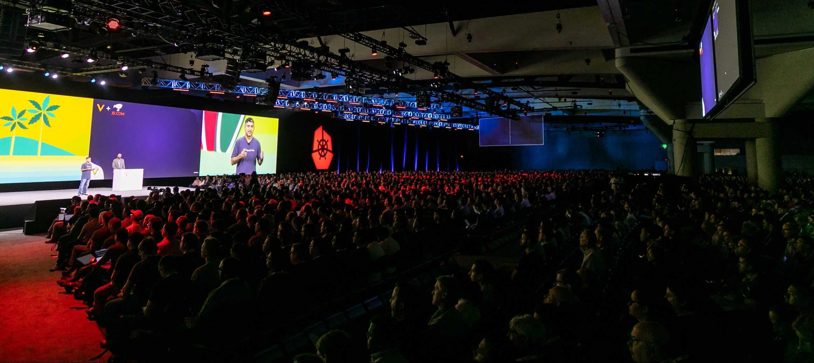

The Incidental Complexity of Kubernetes
Kubernetes is the quintessential source of incidental complexity for our age, and our industry has been duped into believing that it is “good”.
 (50,000 people can’t be wrong!)
{kind=link}
In the classic No Silver Bullet, Brooks (the author), carves out two different types of complexity:
- Accidental complexity: the introduction of more code or moving parts “by accident”, and can be corrected.
- Essential complexity: inherit to the problem at hand, independent of the surrounding environment (environment, programming language, hardware constraints, etc).
Brooks argues that using a high level programming language actually frees us from introducing accidental mistakes that one would introduce if using assembly language. In 40 years of history, Brooks has been proven true, and generally a higher level language helps abstract away the underlying complexity of a computer, allowing engineers to focus on the business at hand.
But at the same time, we don’t go too high. We don’t program our webservers in scratch. Here is my quick take on programming language abstraction:
- Assembly: Building a skyscraper with a toothpick and glue
- C: Juggling bottles of broken glass (overheard from a coworker)
- Golang: Juggling bottles of unbroken glass
- Python: Flying high
- Scratch: Building with LEGOs instead of words
Spoiler here: while we have developed higher levels of abstraction to help us, and yes, higher level languages can save us from accidental complexity, there is no silver bullet and the programming language itself won’t help you by an order of magnitude. The essential complexity remains, and the accidental complexity is only reduced by a little.
But what does this have to do with Kubernetes?
Kubernetes: A Higher Level Abstraction?
Kubernetes (k8s) is a very popular container orchestration tool for running infrastructure. It certainly feels like a higher level language for defining infrastructure.
Just take a look at this example deployment in k8s yaml:
apiVersion: apps/v1
kind: Deployment
metadata:
name: nginx-deployment
labels:
app: nginx
spec:
replicas: 3
selector:
matchLabels:
app: nginx
template:
metadata:
labels:
app: nginx
spec:
containers:
- name: nginx
image: nginx:1.14.2
ports:
- containerPort: 80
Indeed, it is about as high-level as it gets for describing an nginx deployment.
The question is: with the introduction of k8s, has it help reduced accidental complexity? Maybe, but has definitely introduced something else: incidental complexity.
Incidental Complexity
I’m not sure where incidental complexity was first coined but I’ll define it as:
The complexity that one “happens to” introduce through adjacent design decisions, not inherent to the core problem and not introduce by accident.
k8s is not accidental complexity (we don’t accidentally install k8s). It is not essential complexity either; you don’t need k8s to run wordpress.
We, as an industry, are choosing to add a LOT of incidental complexity by adopting k8s as an “industry standard” way of deploying software.
Kubernetes’ Incidental Complexity
I don’t think I need to elaborate on the fact that k8s is complex. But I will list some reasons on why and where that complexity originates:
- “Kubernetes” itself is really a distribution of components. It is hard to really talk about it in isolation. There is no such thing as stock kubernetes.
- Storage via the CSI mechanism is immensely complex, much of which comes from the fact that CSI drivers must all be pluggable, potentially run on many different orchestration systems (not just k8s), run with many different container runtimes, and support different platforms (Windows/Linux).
- Same with the CNI for network.
- The fundamental nature of k8s is controllers operating on objects, which leads to a kind of spooky action at a distance, making it difficult to debug why something is not working, because you may not know which controller is not doing its job (if that controller is even running!)
- This is particularly apparent with storage, which requires the interaction of no less than 7 1 objects and 4 controllers to mount storage on a pod.
- k8s configuration, in YAML format, gives the illusion that the configuration is meant to be generated and maintained by humans.
- k8s’s abstractions don’t actually remove the need to understand the actual software that is running. The complexity is additive (the 300% problem).
Case Study: Wordpress
Let’s use Wordpress, the blogging software, as an example of how we might deploy a very standard piece of software. Let’s compare deploying that software on a very normal infrastructure provider, AWS, and compare it to deploying it on k8s.
This is a hard comparison to make, because the paths to getting a blog up are so different.
Just a brief overview of the approaches, both implemented by Bitnami:
Wordpress on GCP (Multi-Tier)
The GCP template contains:
- A VM with Wordpress, PHP, Apache
- A VM with MariaDB / MySQL
Load balancing is out of scope. Persistent storage is provided by a 10G persistent disk.
Documentation is focuses around a very traditional sysadmin admin approach of editing files, restarting system services, etc.
Wordpress on Kubernetes (Helm Chart)
The Helm chart contains:
- A transitive inclusion of the MariaDB Helm Chart
- A transitive inclusion of a Memcached Helm Chart
- Storage provided by a PV
- Load balancing is included via an ingress controller
This Helm chart is of the newer style, where everything is in a templated YAML file.
Troubleshooting is done by enabling a diagnosticMode, which overrides the command to be sleep, so that you can kubectl exec into a pod before it crashes.
Comparison
It is not that the additional complexity induced by k8s is simply a matter of familiarity. Even to a k8s professional, where all the expertise of running a k8s cluster is “simple” (really, “at hand”), there is still a lot of code and distributed systems going on for a wordpress blog.
Is there more complexity in the GCP approach, or the k8s/helm approach?
The GCP approach certainly has a lot of implicit complexity. At least with Helm, any changes you make are encoded directly into the YAML, and not just a random file adjustment of apache.conf. The Helm approach is more reproducible and gitopsy.
But it also assumes you have a fully functioning k8s cluster with storage and network capabilities. The GCP approach is certainly easier to debug with its fewer moving parts.
The Future
I believe that the additional incidental complexity added by k8s is not worth any of the potential benefits in the overwhelming majority of use cases. I think this is true, even for large internal platforms.
Even if I am right about the unnecessarily complexity of k8s, our industry has spoken, and k8s is here to stay. Enterprises will be pressured to come up with a “k8s strategy”, and deploy k8s if they haven’t already. k8s cottage industries will continue to flourish. Vendors will continue to supply Helm charts for deployment, with the illusion of their software is shrink-wrapped.
Maybe in a few years we’ll snap out of it, like we did with OpenStack, and realize that we should not be in the business of running container platforms. Till then, most of us will continue to have to deal with k8s, but we should not forget how reliable, debuggable, and just simpler infrastructure can (or used to) be.
-
Objects (not counting snapshot-related objects):
PersistentVolumeClaims,PersistentVolumes,CSIDriver,CSINode,StorageClass,VolumeAttachment,PodControllers (for EBS), not including kubelet:csi-controller.csi-provisioner,csi-controller.ebs-plugin,volume-attachment(controller-manager),csi-node.ebs-plugin↩︎